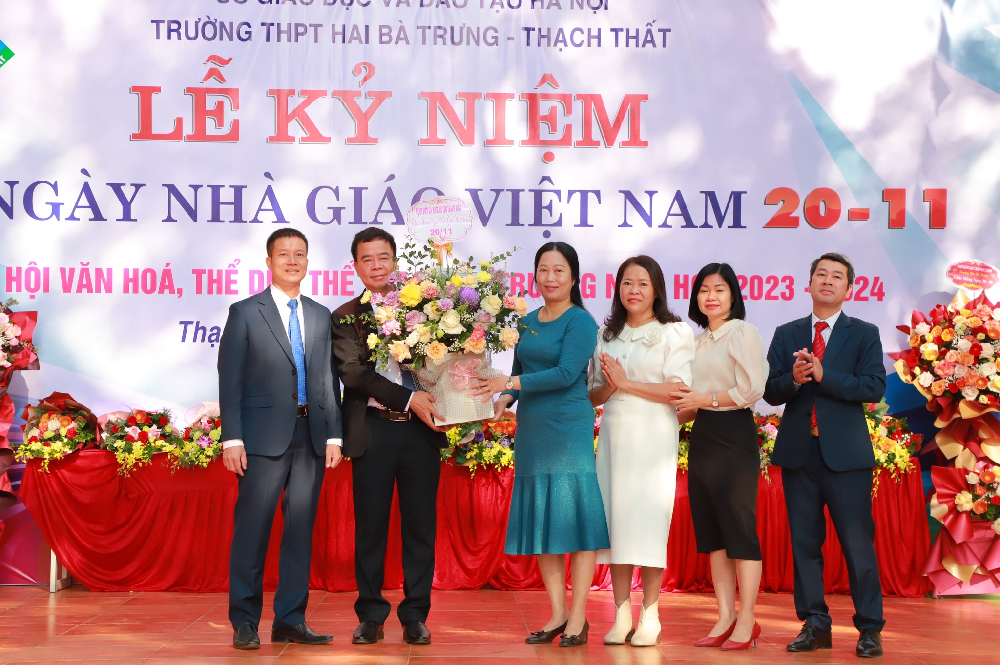
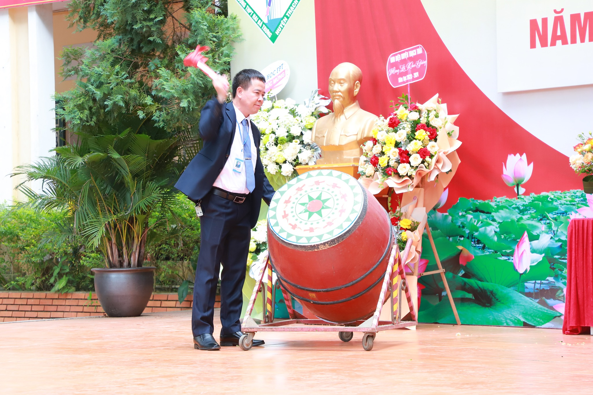

NGÀY NHÀ GIÁO VIỆT NAM 20-11
Ông cha ta có câu: "Qua sông thì phải lụy thuyền/ Muốn con hay chữ phải yêu lấy thầy". Ngày Nhà giáo Việt Nam chính là ngày lễ lớn để mỗi người bày tỏ lòng biết ơn, sự kính trọng đối với các thầy cô có công lao dìu dắt, dạy dỗ mình trưởng thành. Chính vì vậy, em rất háo hức, mong chờ. Vào ngày này, em thường viết những bức thư nhỏ gửi đến thầy cô. Đối với em, thầy cô luôn là những người lái đò thầm lặng, cần mẫn. Họ không quản ngại gian nan, vất vả để nuôi dạy học sinh nên người. Bởi thế, lúc sinh thời cố Thủ tướng Phạm Văn Đồng đã viết: "Nghề dạy học là nghề cao quý nhất trong những nghề cao quý, nghề sáng tạo nhất trong các nghề sáng tạo". Họ đáng được mọi người trân trọng và tôn vinh. Ngày 20/11 là cơ hội để tất cả chúng ta làm điều đó.
KHAI GIẢNG NĂM HỌC MỚI.
Hôm nay, tại ngôi trường yêu quý của em, một buổi lễ khai giảng trọng đại đã được tổ chức. Em đã sẵn sàng cho ngày đặc biệt này từ khi mặt trời mới bắt đầu ló sáng. Mẹ đã chuẩn bị cho em bộ đồng phục mới tinh, và cùng với niềm phấn khích, chúng em đã bước ra khỏi nhà. Chỉ sau khoảng mười lăm phút di chuyển, em đã đặt chân đến trường. Bước ra khỏi xe, em chào mẹ và bước vào sân trường với trái tim đang đập nhanh. Hôm nay, ngôi trường thật sự lộng lẫy. Sân trường được dọn thật sạch sẽ và gọn gàng, những hàng ghế được xếp ngay ngắn. Trên sân khấu, một tấm băng rôn màu xanh nổi bật, được trang trí với dòng chữ màu trắng long lanh: "Lễ Khai Giảng năm học 2023 - 2024" đặt ở vị trí trung tâm. Phía dưới, chúng ta có thể thấy tên trường "Trường Tiểu học…" tỏa sáng. Cả hai bên sân khấu cũng treo đầy những lá cờ đỏ thắm, tạo nên một không gian trang trọng. Chiếc trống yên lặng nằm ở một góc, chờ đến lúc thích hợp để tạo nên tiếng ồn ào vui tươi. Buổi lễ khai giảng bắt đầu bằng những tiết mục văn nghệ sôi động, rồi tiến triển đến phần chào cờ, khi tất cả chúng ta cùng đứng vạch tay trái trái trong lòng. Tiếp theo, thầy hiệu trưởng đã đứng lên để phát biểu chào mừng một năm học mới tràn đầy triển vọng. Cuối cùng, buổi lễ kết thúc trong tiếng trống khai trường rộn ràng, tạo nên một cảm giác phấn khích và đầy kỷ niệm trong lòng chúng em.